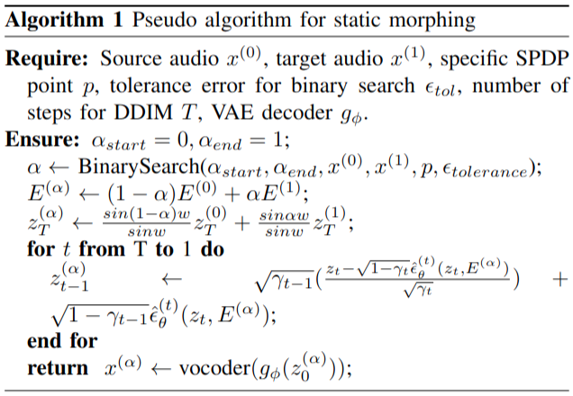
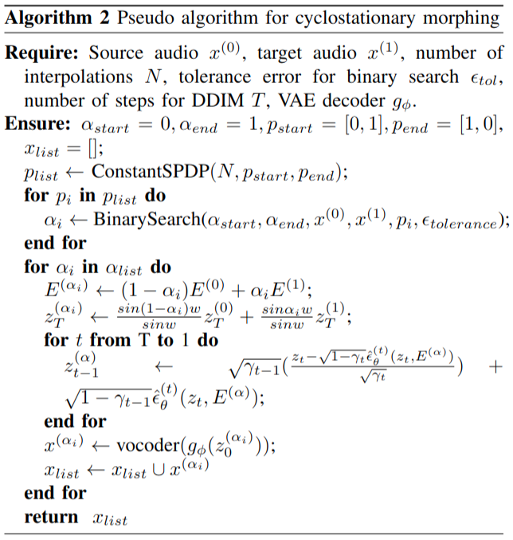
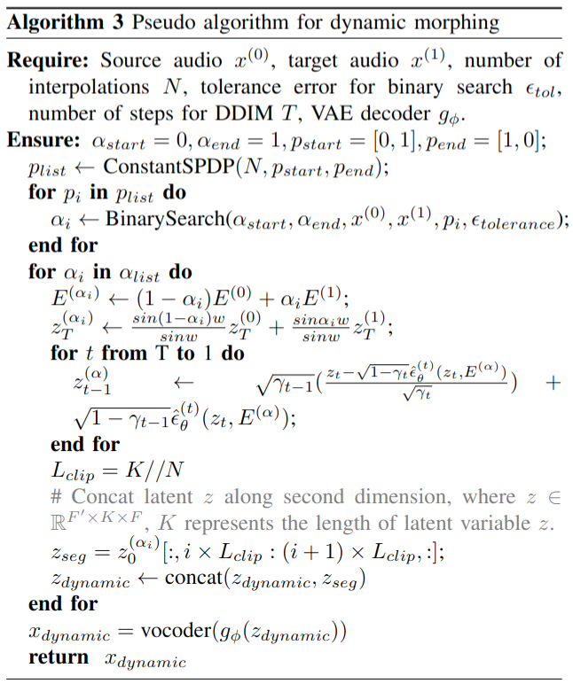

This page demonstrates SoundMorpher, featuring a selection of morphed results from our experiments, including timbral morphing of musical instruments, dynamic music morphing and environmental sound morphing. We hope you could enjoy our demonstartion and find some interesting sounds!
This section provides pseudo algorithm for controllable sound morphing with discrete α series in Paper Section IV.D. However, SoundMorpher is not restricted to the aforementioned sound morphing methods; it can be extended to other approaches, such as warped dynamic morphing, by concatenating the original dynamic morphing result with its reversed counterpart. We leave this exploration for future work.



We perform our experiment on one NVIDIA GeForce RTX 3090 with GPU 24GB memory. Following configuration in [1] , we use AdamW optimizer[2] with learning rate 0.002 and 2500 steps to perform conditional embedding optimization. We use LoRA[3] with \(r = 4\) and \(r_0 = 2\) to perform model adaptation, the LoRA is trained by Adam optimizer with 0.001 learning rate. We trained 150 steps for the LoRA injected trainable paramters for model adaptation and 15 steps for LoRA injected trainable parameters for unconditional bias correction. For convex CFG scheduling, we set \(w_{max} = 3.5\) and \(w_{min} = 1.5\) for timbral morphing and environmental sound morphing task, and \(w_{max} = 4\) and \(w_{min} = 1.5\) for music morphing task. We also provide additional background knowledge and abaltion study on Convex CFG scheduling in SoundMorpher.
[1] Yang, Z., Yu, Z., Xu, Z., Singh, J., Zhang, J., Campbell, D., ... & Hartley, R. (2023). Impus: Image morphing with perceptually-uniform sampling using diffusion models. arXiv preprint arXiv:2311.06792.
[2] Loshchilov, I. (2017). Decoupled weight decay regularization. arXiv preprint arXiv:1711.05101.
[3] Hu, E. J., Shen, Y., Wallis, P., Allen-Zhu, Z., Li, Y., Wang, S., ... & Chen, W. (2021). Lora: Low-rank adaptation of large language models. arXiv preprint arXiv:2106.09685.
If you are interested in our paper, please cite as below:
Niu, Xinlei, Jing Zhang, and Charles Patrick Martin. "SoundMorpher: Perceptually-Uniform Sound Morphing with Diffusion Model." arXiv preprint arXiv:2410.02144 (2024).